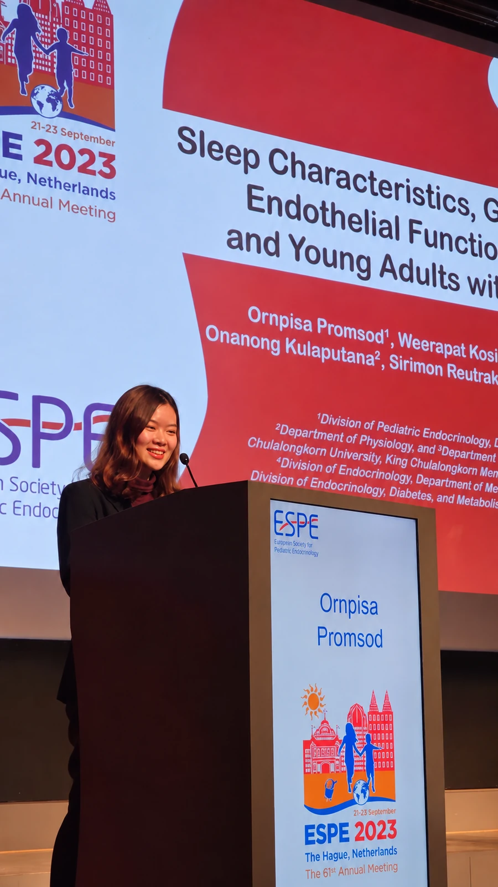

บรรยากาศในคลินิก
หมออิมเล่นกับเด็กในคลินิก
ช่วงเวลาที่หมออิมเล่นกับเด็ก ๆ ที่เติบโตคลินิก

รู้จักหมออิม
ว.52953
หมออิมเป็นกุมารแพทย์ด้านต่อมไร้ท่อและเมแทบอลิซึมในเด็ก ให้บริการที่เติบโตคลินิก จ.ราชบุรี ดูแลทั้งโรคเด็กทั่วไป สุขภาพตามวัย และการเจริญเติบโตของเด็กและวัยรุ่น
“การดูแลเด็กไม่ได้มีแค่ตอนที่ป่วย แต่รวมถึงการติดตามว่าเด็กแต่ละคนกำลังเติบโตไปตามวัยหรือไม่”
คณะแพทยศาสตร์โรงพยาบาลรามาธิบดี
มหาวิทยาลัยมหิดล
จุฬาลงกรณ์มหาวิทยาลัย
โรงพยาบาลราชบุรี
บรรยากาศในคลินิก
ช่วงเวลาที่หมออิมเล่นกับเด็ก ๆ ที่เติบโตคลินิก
นำเสนอผลงานวิจัยด้านต่อมไร้ท่อเด็กในการประชุม European Society for Paediatric Endocrinology (ESPE) ปี 2023 ณ กรุงเฮก ประเทศเนเธอร์แลนด์
